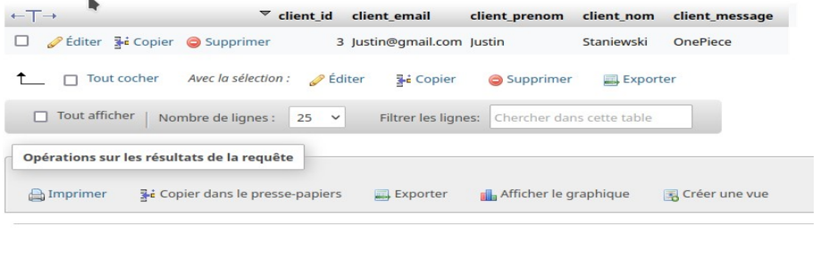

Concepteur Web - Web Designer
Bienvenue sur mon Portfolio, je vais faire une courte presentation.
Je m'appelle Justin Staniewski, je suis un étudiant de 22 ans en 2éme année de BTS SIO Option SLAM ( Services Informatiques aux Organisations spécialité Solutions Logicielles et Applications Métier) au Lycée Claude de France à Romorantin-Lanthenay dans le département du Loir-et-Cher en région Centre-Val de Loire
Pour en arriver ici j'ai d'abord commencer une formation dans une licence informatique-mathématique à Blois pendant 2 ans, mallheuresement la partie mathematique ne m'a pas plus, j'ai donc pris la décision de me réorienter vers un BTS SIO étant un passionné d'informatique, j'ai persévérer et je suis à la fin de ma 2éme année de BTS.
| - Net Bean - Java FX |
- Java |
|---|---|
| - Visual Studio Code |
- PHP en BACKEND et FRONTEND - HTLM/CSS - JAVAV SCRIPT (en cours d'apprentisage) |
| - Android Studio | - JAVA |
| CMS/WORDPRESS | WORDPRESS |
| Travail | Compétence aquis |
|---|---|
Préparateur de commande (Auchan Octobre 2018 - Décembre 2018) |
|
| Employé polyvalent à Picard |
|
| Stage 2023 Création d’un site internet sur WordPress |
|
| Stage 2024 Création d’un site internet sur WordPress via Elemontor pro |
|

 https://afjv.com/news/11406_chiffre-affaires-marche-jeux-video-france-2023-volume-valeur.htm
https://afjv.com/news/11406_chiffre-affaires-marche-jeux-video-france-2023-volume-valeur.htmAdoption croissante de la connectivité sans fil 2,4 GHz pour une latence réduite et une meilleure fiabilité.
Amélioration de la connectivité Bluetooth pour une compatibilité accrue avec les appareils mobiles et le jeu à distance.
https://afjv.com/news/11406_chiffre-affaires-marche-jeux-video-france-2023-volume-valeur.htmTendance croissante des manettes compatibles avec plusieurs plateformes
(PC, PlayStation, Xbox, Nintendo Switch) pour une flexibilité accrue.
Exemples : Razer Wolverine V2 Chroma, Nacon Revolution Unlimited Pro, Xbox Elite Wireless Controller Series 3.
https://www.razer.com/fr-fr/console-controllers/razer-wolverine-v2-chromaIntégration de commandes vocales et gestuelles pour une interaction plus intuitive.
Développement de manettes éco-responsables fabriquées avec des matériaux durables.
 https://www.usinenouvelle.com/article/l-industrie-c-est-fou-microsoft-lance-une-manette-xbox-en-plastique-recycle-a-partir-d-ancien-modeles.N2120516
https://www.usinenouvelle.com/article/l-industrie-c-est-fou-microsoft-lance-une-manette-xbox-en-plastique-recycle-a-partir-d-ancien-modeles.N2120516

Intégration de technologies haptiques et de retour
de force plus avancées pour des sensations de jeu plus réalistes et immersives.
Exemples : Sony DualSense Edge avec ses gâchettes adaptatives et son retour haptique précis,
manettes compatibles avec les jeux VR.
 https://direct.playstation.com/fr-fr/buy-accessories/dualsense-edge-wireless-controller
https://direct.playstation.com/fr-fr/buy-accessories/dualsense-edge-wireless-controllerLa pénurie mondiale de puces a pu ralentir la production et la disponibilité de certaines manettes.
Augmentation des prix potentielle pour certains modèles..
 https://community.fs.com/fr/article/the-chip-shortage-current-challenges-predictions-and-potential-solutions.html
https://community.fs.com/fr/article/the-chip-shortage-current-challenges-predictions-and-potential-solutions.html Manettes avec fonctionnalités d'intelligence artificielle pour une assistance contextuelle en jeu
 https://www.lesnumeriques.com/joypad/avec-playability-reconnaissance-faciale-et-ia-au-service-des-joueurs-en-situation-de-handicap-n220266.html
https://www.lesnumeriques.com/joypad/avec-playability-reconnaissance-faciale-et-ia-au-service-des-joueurs-en-situation-de-handicap-n220266.html
Résumé :
Le monde des manettes de jeux vidéo a connu une évolution fulgurante ces deux dernières années, avec des innovations technologiques et des fonctionnalités inédites. Les manettes haut de gamme, les technologies immersives comme le retour haptique et les gâchettes adaptatives, la connectivité sans faille et la personnalisation à 360° redéfinissent l'expérience de jeu. L'intégration dans les services de jeux vidéo comme le Xbox Game Pass Ultimate et l'avenir prometteur avec des technologies encore plus immersives font de ce domaine un secteur en pleine effervescence.
Conclusion :
Que vous soyez un joueur invétéré ou un casual gamer, vous êtes sans doute témoin de cette transformation remarquable qui vous offre des possibilités inédites de personnalisation, d'immersion et de performance. N'hésitez pas à explorer les différentes options disponibles pour trouver la manette idéale et vivre une expérience de jeu inoubliable.
B1.1.5 Gérer des sauvegardes
Installation de l’extension D’UpdraftPlus pour gérer et planifié les sauvegarde.
B1.5.2 Déployer un service
Déploiement d'un site WordPress en ligne vi FileZila

B.1.3.3 Participer à l’évolution d’un site Web exploitant les données de l’organisation.
Le site Web a évolué conformément au besoin exprimé, Mise en place d’une platforme de commande.
B1.4.2 Planifier les activités et B1.4.3 Évaluer les indicateurs de suivi d’un projet et analyser les écarts
Utilisant du Diagramme de Gant pour planifier mon activité et évaluation des écarts.

Utilisant de la méthode agile :

B1.5.2 Déployer un service
Déploiement d'un site en ligne vi FileZilla

B1.6.1 Mettre en place son environnement d’apprentissage personnel
Mise en place d’un bureau de travail :
Mise en place d’unenvironnement sur pc :

B.1.3.3 Participer à l’évolution d’un site Web exploitant les données de l’organisation.
Mie en place d’une application JavaFX interconnecté avec le site du PPE4 en exploitant les données du site.
B1.4.2 Planifier les activités
Planification des activités via Trello

B1.4.3 Évaluer les indicateurs de suivi d’un projet et analyser les écarts
Utilisant du Diagramme de Gant pour planifier mon activité et évaluation des écarts.

B1.5.2 Déployer un service
Déploiement de l’application interconnecté avec base de données.
B1.6.1 Mettre en place son environnement d’apprentissage personnel
Mise en place d’unenvironnement sur pc :


→ Configuration d’un serveur Debian
→ Identification des menaces et mise en œuvre des dépenses appropriées
→ Gestion des actions et privilèges appropriées
→ Savegarde et réplication BDD
→ Service et protocole de transport
→ Ssh et FTP
→ Assurer le cybersécurité d’une solution applicative et son developpement
B.1.1.3 Mettre en place et vérifier les niveaux d’habilitation associés à un service
Mise en place dez different rôle selon les utilisateur
rôle 2 : administrateur
rôle 1 : Utilisateur du Site

B1.1.5 Gérer des sauvegardes
Sauvegarde réalisé via GitLab:

B1.2.1 Collecter, suivre et orienter des demandes
B1.2.2 Traiter des demandes concernant les services réseau et système, applicatifs
Mise en place d’une proposition de livre:

Collection, suivi et traitement de la demande


B.1.3.3 Participer à l’évolution d’un site Web exploitant les données de l’organisation
Mise en place de la proposition de livre
B1.4.2 Planifier les activités
Utilisation d'un Trello

B1.5.1 Réaliser les tests d’intégration et d’acceptation d’un service
Réalisation de nombreux tests

B1.5.2 Déployer un service
Mise en place de Web service interconnecté avec une application

B1.1.1 Recenser et identifier les ressources numériques
Recensement et identification des ressources via GLPI :

B1.2.1 Collecter, suivre et orienter des demandes
B1.2.2 Traiter des demandes concernant les services réseau et système, applicatifs
Collecter et suivre les demandes et traitements via GLPI

Gestion SEO et sécurisation du site


https://www.linkedin.com/company/le-village-by-ca-food-val-de-loire/posts/?feedView=all